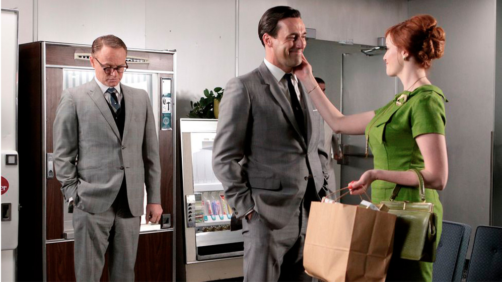
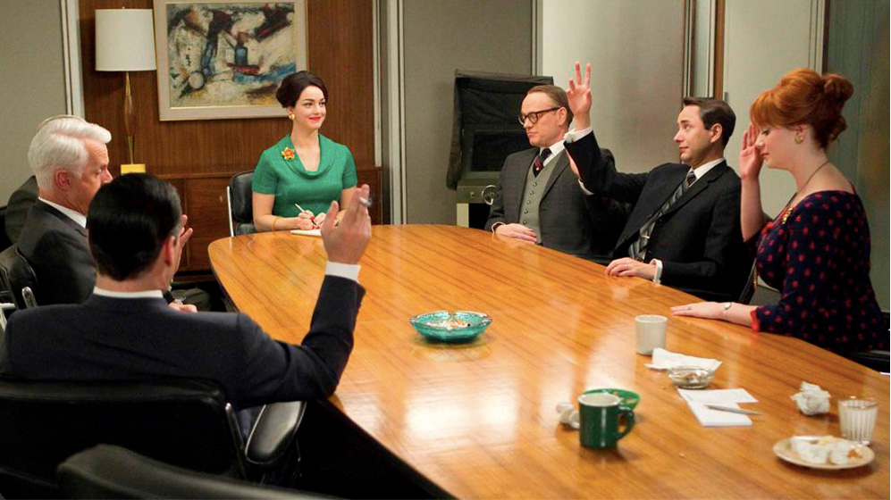
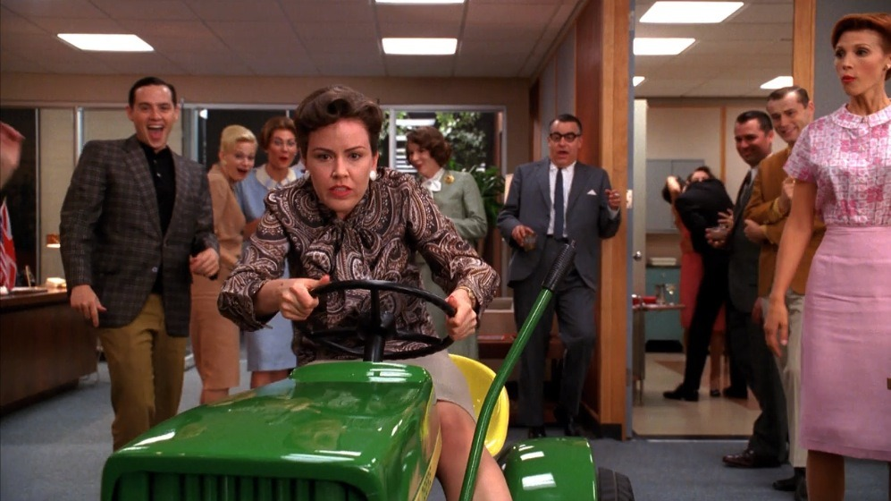
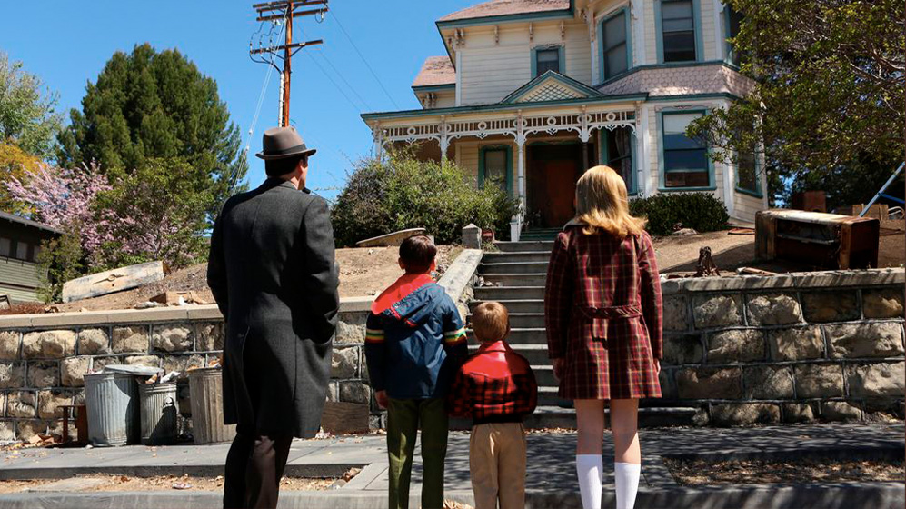
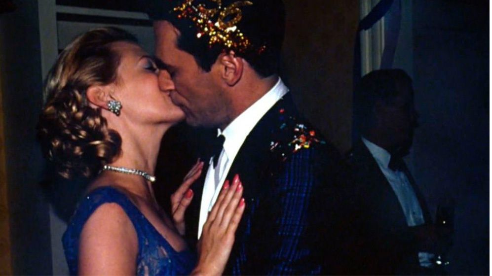

Personajes
Curiosidades
Escenas
10 Curiosidades sobre Madmen que quizas no sabias

Los 10 mejores episodios de 'Mad Men'

Mad Men cumplió 15 años: lo que no sabías de la aclamada serie

23 Cosas que probablemente no sabías sobre "Mad Men", según su elenco y creador

28 cosas que nos enseñó Mad Men (y que nunca olvidaremos)

5 razones para ver… “MAD MEN”